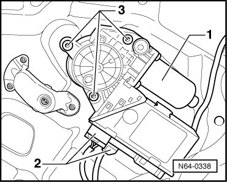
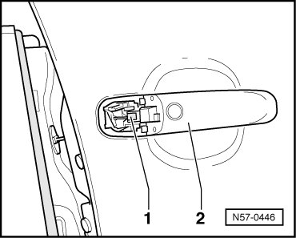
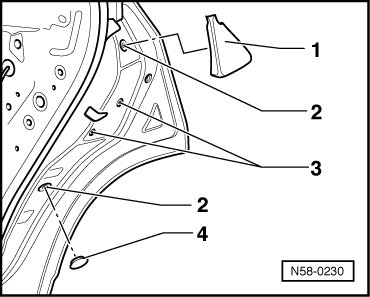
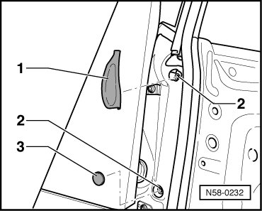
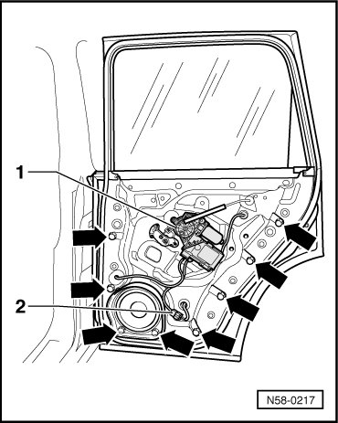
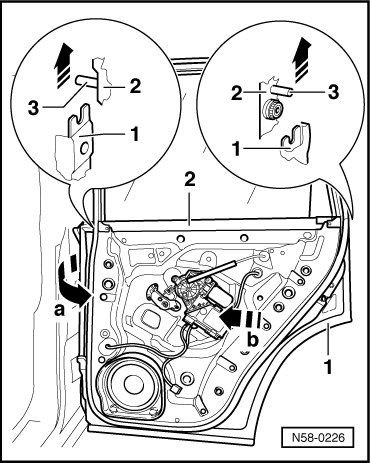
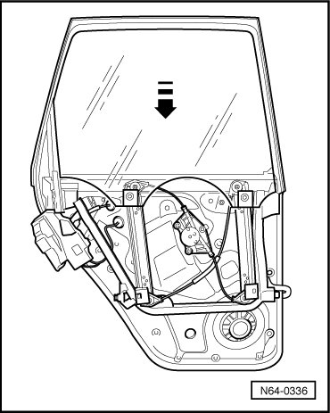
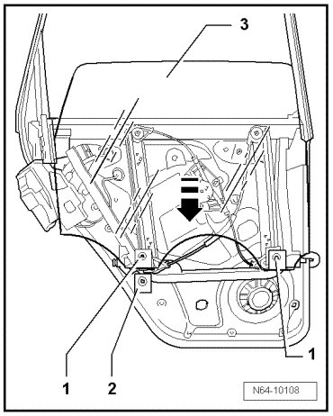
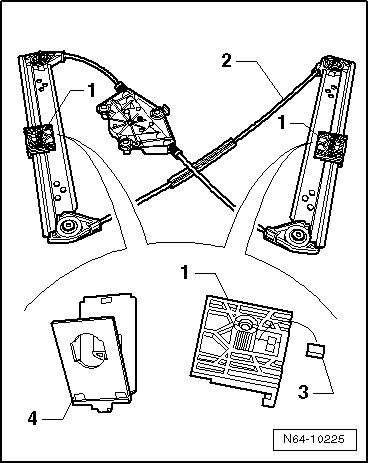
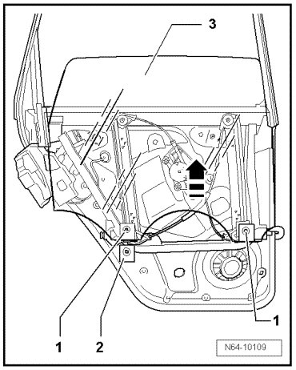

Rear Door Window
Rear Door Window
Door Window
Removing
- Remove rear door trim.

- Disconnect harness connectors - 2 - from window regulator motor - 1 -.
- Remove the bolts - 3 - and remove window regulator motor.
- Remove the lock cylinder housing. Refer to --> [ Lock Cylinder Housing ] Front Door

- Unclip the clip - 1 - from the door handle - 2 -.
- Pry out cover caps - 1 - and - 4 -.

- Remove the bolts - 2 - for window frame.
Tightening specification: 20 Nm
- Remove bolts - 3 - for door lock.
Tightening specification: 8 Nm
- Pry out cover caps - 1 - and - 3 -.

- Disconnect boot from B-pillar and disconnect harness connectors.
- Guide boot and harness connectors through opening into outer door panel.
- Remove the bolts - 2 - for window frame.
Tightening specification: 20 Nm
- Disconnect harness connector - 2 - and guide it through opening in assembly carrier.

- Remove bolts - arrows -.
Tightening specification: 8 Nm
- Pull front part of subframe slightly away from outer door panel - arrow a -.

- Be careful to guide the wiring as well.
- Pull subframe out of outer door panel toward hinge side - arrow b -.
- When doing this, make sure that door lock does not catch in outer door panel.
- Lower window by hand in - direction of arrow - to lower stop.

- Remove the 2 screws - 1 - from the securing elements - 2 - on the door window - 3 -.

- Open the 2 securing elements - 2 -.
- Lift the door window - 3 - out of securing elements - 2 - and pull the door window - 3 - downward in - direction of arrow - out of window guide.
Installation
• Rubber buffer - 3 - is supplied with new window regulator in a plastic bag.
- Before inserting the door window mounting elements - 4 - make sure that rubber buffers - 3 - are inserted into the window regulator mounts - 1 - - 2 -.

- Guide the door window - 3 - into the guide - 3 - and place it into the securing elements - 2 -.

- Install bolts - 1 - and push door window - 3 - to upper stop by hand in - direction of arrow -.
- Tighten bolts to the tightening specification of 3.3 Nm.
Then, continue in reverse order of removal.
• A function test must be performed before door trim is installed.